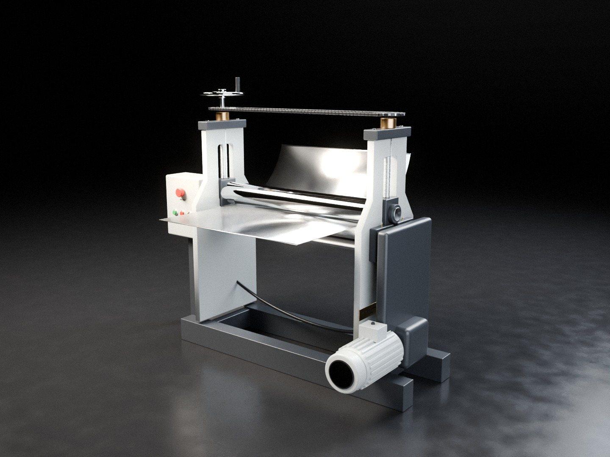

Kalite sonradan kontrol edilmez, baştan planlanır.
Bu sayfada çalışma yöntemimiz ve esas aldığımız teknik değerler yer almaktadır. Değerlerin kaynakları sayfa sonunda belirtilmiştir.
Çizimden teslimata beş adım
Ölçü, malzeme ve revizyon netleşmeden üretime geçilmez.
- Talep ve dosyalarSTEP, DXF, PDF teknik resim veya ölçülü eskiz; adet ve termin bilgisi.
- Uygunluk kontrolüKalıp, büküm sırası, minimum flanş, delik mesafesi, kaynak erişimi.
- Yazılı teklifFiyat, termin, malzeme ve onaylanan revizyon tek belgede.
- İmalatSeçilmiş anlaşmalı atölyelerde; tüm aşamalar tarafımızca takip edilir.
- Kontrol ve teslimÖlçü kontrolü, kodlu parça listesi, istenirse ölçü raporu.
Büküm: kalıp seçimi
Abkant bükümde altta V kalıp, üstte bıçak kullanılır. Havada bükümde iç radyüsü kalıp ağzının genişliği belirler. Aşağıdaki tablo, malzemeye göre esas alınan kalıp seçimini göstermektedir. Kesin değerler her yeni malzeme partisinde deneme bükümüyle doğrulanır.
| Malzeme | V kalıp ağzı | Köşe iç yarıçapı |
|---|---|---|
| Siyah sac, DKP | ≈ 8 × t | ≈ V × %16 |
| Paslanmaz 304 / 316 | ≈ 8–12 × t | ≈ V × %20–22 |
| Alüminyum 5052 (yumuşak) | ≈ 5–6 × t | Deneme bükümüyle |
| Alüminyum 6061-T6 (sert) | ≈ 10–12 × t | Deneme bükümüyle |
En kısa bükülebilir kenar ≈ 0,7–0,77 × V. t: sac kalınlığı.
Örnek: 2 mm AISI 304, 90° büküm
| Kalıp | V16 (≈ 8 × t) |
|---|---|
| Köşe iç yarıçapı | ≈ 3,2–3,5 mm |
| En kısa kenar | ≈ 12,5 mm |
| Bükme kuvveti | ≈ 21–25 ton / metre |
| Geri açılma | Siyah sactan fazla; ilk parçada açı ölçülüp ayar düzeltilir |
| Üst bıçak | Dönen kenar varsa kaz boynu |
Pres kuvveti, Bystronic'in havada büküm formülüyle ve 304 için 515–600 MPa çekme dayanımıyla hesaplanmıştır.
Toleranslar
Üretilen her parçada belirli bir ölçü sapması bulunur; önemli olan izin verilen sınırdır. Çizimde tolerans belirtilmemişse ISO 2768-1 orta sınıf (m) uygulanır. Örneğin 100 mm'lik bir ölçü 99,7–100,3 mm aralığında olmalıdır. Daha dar toleranslar teklif aşamasında yazılı olarak belirlenir.
| Ölçü aralığı (mm) | Tolerans (m) |
|---|---|
| 0,5 – 6 | ± 0,1 |
| 6 – 30 | ± 0,2 |
| 30 – 120 | ± 0,3 |
| 120 – 400 | ± 0,5 |
| 400 – 1000 | ± 0,8 |
| 1000 – 2000 | ± 1,2 |
Açı toleransı (kısa kenar boyuna göre)
| Kısa kenar (mm) | Tolerans (m) |
|---|---|
| ≤ 10 | ± 1° |
| 10 – 50 | ± 0°30′ |
| 50 – 120 | ± 0°20′ |
| 120 – 400 | ± 0°10′ |
Kaynak
Kaynak işleri kurucumuz tarafından bizzat kontrol edilir. Akım ve hız tahminle değil, yazılı kaynak talimatına (WPS) göre ayarlanır.
Paslanmaz çelikte TIG (argon) kaynağı uygulanır. AISI 304 için ER308L, AISI 316 için ER316L dolgu teli kullanılır. Tam nüfuziyet gereken dikişlerde kök tarafı da koruyucu gazla korunur.
Uzun dikişler, çarpılmayı önlemek amacıyla kısa bölümler hâlinde ve karşılıklı olarak çekilir. Kaynak sonrası dikişler taşlanır; paslanmaz yüzeylerde kaynaktan kaynaklanan renk değişimi giderilir.
Malzeme ve kayıt
Talep edilmesi hâlinde EN 10204 3.1 malzeme sertifikalı sac ve profil kullanılır.
Her parça kod ve revizyon numarasıyla takip edilir. Revizyon değişikliğinde eski kod iptal edilir; geçersiz dosyalar kesim veya büküme gönderilmez.
Teslimatta kodlu parça listesi verilir; talep hâlinde ölçü raporu eklenir.
Kaynaklar: Durma, V kalıp tablosu, The Fabricator, iç radyüs, Bystronic, pres kuvveti, ISO 2768-1.